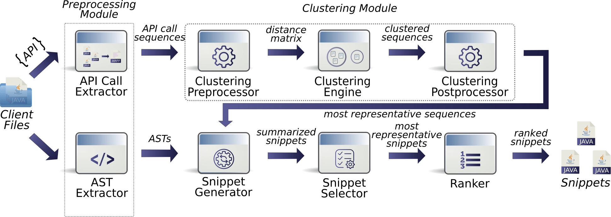

A novel approach for mining API Usage Examples in the form of source code snippets, from client code
CLAMS (CLustering for Api Mining of Snippets) is an approach for mining API usage examples that lies between snippet and se- quence mining methods, which ensures lower complexity and thus could apply more readily to other languages.

The system generates clear and concise snippets which would be easy to follow and useful when using an API you are unfamiliar with.
The system is great and I think it would be very useful particularly in discovering clients of our APIs!